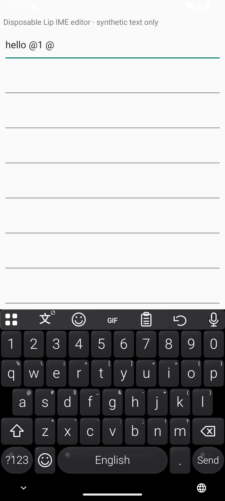
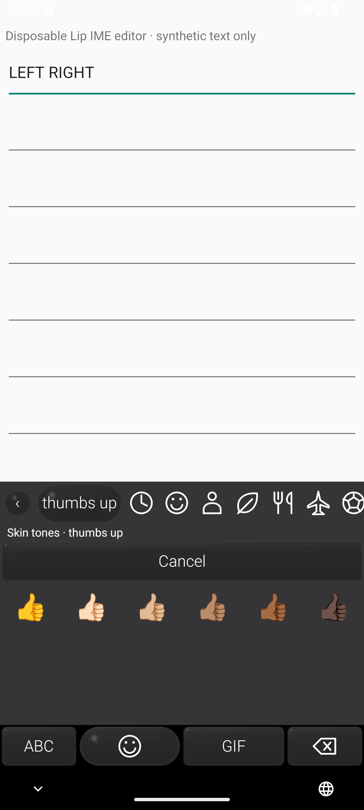
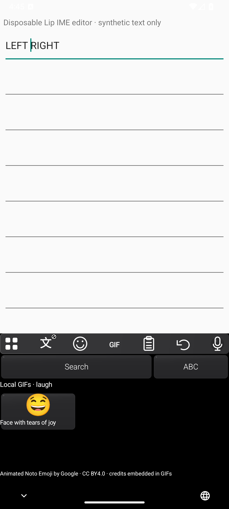

Swipe, then choose.
A pinned, open-source neural swipe model offers correction candidates. Better-than-Gboard accuracy is a target, not a measured result.
Android build 50003 · English first
Speak on Mac. Type, swipe or speak on Android. Lip keeps speech recognition local, without an OpenAI login.
Download Android APK0.5.0-preview.3-offline · build 50003 · 755 MB · Android 13+. Open in Chrome on Wi-Fi. Release notes and checksum. Device and editor qualification remains open.

Recognize speech
on your device.
No cloud transcription. No second AI rewriting your words. Clean handles model-native punctuation, capitalization and filler removal; results still need review.
Where your data goesAn independent English keyboard, not a patched Gboard. A number row, symbol hints and dark glass keys keep the layout familiar.


A pinned, open-source neural swipe model offers correction candidates. Better-than-Gboard accuracy is a target, not a measured result.
Drag Space to move the cursor. Slide Backspace for whole-word deletion. One-handed layout and key height are adjustable.
Search Unicode emoji offline and hold for skin tones. A small bundled GIF catalog works with supported receiving apps.
The current Android APK includes both 3.0 Clean and 3.0 Pro. Both run locally, with English speech only. Future releases will use a small installer with separate, optional in-app downloads for each model.
Hold Fn for push-to-talk. Double-tap to keep recording; tap again to stop and transcribe.
Insertion requires Accessibility access and a safely verified caret. If Lip cannot verify the destination, text stays in Review. Some editor integrations remain unconfirmed.
Use the microphone control for local dictation. The keyboard and speech model are separate, so typing does not require a speech-model download.
Microphone, phone performance and the full receiving-editor matrix still need device validation. There is no claim of reliable insertion everywhere.
Automatic placement, not a “Neural Engine only” promise: macOS uses Core ML system placement across supported processors. The published Android build 50003 uses a CPU baseline; current Android 16+/ARM64 source adds automatic provenance-gated Vulkan selection with CPU safety fallback. Actual phone GPU execution and accelerator efficiency remain unqualified.
The screenshots are real development captures, not mockups. Emulator checks are useful; they do not replace physical-phone and editor testing.
The signed Android package is published. Both bundled models passed offline, file-fed transcription tests in the exact release APK on an ARM64 emulator. Physical-phone microphone tests, some insertion paths, full Gboard parity and the complete 9.2 acceptance gate remain open. macOS is development-only here; no current Mac installer is offered.
Future installers will not bundle speech weights. Download Clean or Pro inside the app only when you choose. New release names will follow Lip v0.xxx; this existing release keeps its original identity and URL.
Source PRs 17 and 18 are merged. The next Lip v0.007 identity is reserved source, not a published release. Its audit and version tooling are implemented; no new download is offered here. New source targets Android 16+/ARM64 and macOS 26+/Apple Silicon. This does not relabel build 50003 or establish that current source exactly reproduces its APK.
Direct/background ChatGPT or Claude sending is not verified or enabled. Translation—including an optional ChatGPT backend—sticker-pack import, WeChat artwork, and typed/swiped history sync remain future work. No cloud translation or typing archive is enabled.
Read the source